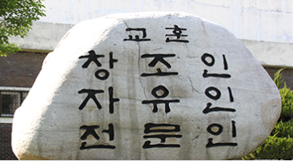
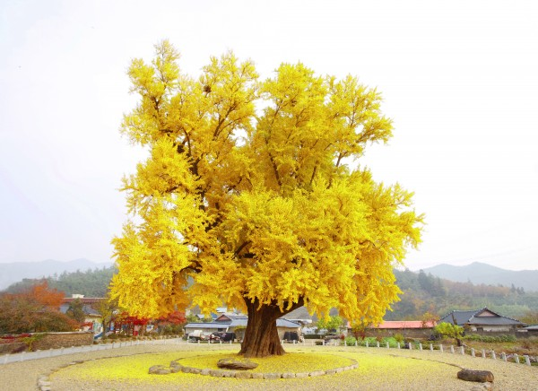

서울특별시 노원구 하계동에 있는 공립 특성화 고등학교다.
학교의 연원은 1918년 설립된 경성공립농업학교로 올라가나, 청량상업고등학교가 설립된 1957년 2월 15일을 설립일로 삼고 있다. 사실 경성공립농업학교는 서울공립농업학교를 거쳐 해방 후 청량중학교와 서울농업고등학교로 개편되었고, 1957년 서울농업고등학교가 서울농업대학(現 서울시립대학교)으로 승격됨에 따라 청량중학교가 청량상업고등학교로 바뀐 것이다.
최초 위치는 현재 서울시립대 구내였으나, 1959년 현 청량고등학교 자리로 이전했고, 1961년 인문계를 포함한 청량종합고등학교로 바뀌었다가 1969년 청량공업고등학교로 다시 변경된 후, 1981년 3월 1일 현재의 교명으로 바뀌게 되었다.
1981년 5월 서울 곳곳에 흩어져 있던 서울대학교의 여러 단과대학들이 종합화 계획에 따라 관악캠퍼스로 이전하면서, 공릉동에 있던 공과대학 부지 일부라고 치기에는 거의 대학교 크기이다.를 넘겨받아 현재의 위치로 이전했다. 정확히 말하면 서울대학교 공과대학 부지 한구석에 있던 교양과정부 자리가 현재 경기기계공고 자리. 옛 서울대학교 공과대학 부지는 현재 서울과학기술대학교, 원자력병원, 한국전력 연수원 등이 모두 들어서 있을 정도로 대단히 넓었다.
1. 교훈
2. 학과
자동화기계과하이텍융합기계과
3D융합설계과
항공드론과
스마트설비과
산업안전제철과
스마트팩토리과
전기제어과
컴퓨터전자과
3. 교목과 교화
은행나무
개나리

4. 역사
1918.02.28: 경성공립농업학교 설립인가1957.02.15: 청량상업고등학교 설립 인가
1970.03.01: 청량공업고등학교로 개교(기계, 전기, 화공, 공예, 토목과 설치)
1977.12.03: 청량기계공업 고등학교로 개편(정밀기계, 배관용접, 금속, 전기과 설치)
1981.03.01: 경기기계공업 고등학교로 개편(인가학급 4과 45학급)
1981.05.07: 경기기계공업 고등학교 이전 및 준공식(현위치 : 노원구 하계동 78)
2010.03.02: 특성화고등학교 적응력향상을 위한 진로교육프로그램 구안/적용 방안 시범학교 운영(2년간)
2015.12.31: 교육과정운영 우수학교 교육감 표창
2016.09: 제 51회 전국기능경기대회 운영학교
2016.12: 직업교육 우수학교 교육감 표창, 정보교육 우수학교 교육감 표창
2020.03.02: 8개학과에서 9개 학과로 학과 증설(항공드론과 신설)
2020.09.01: 제 25대 신승인 교장 취임
5. 출처
- 경기기계공업고등학교 홈페이지- 나무위키